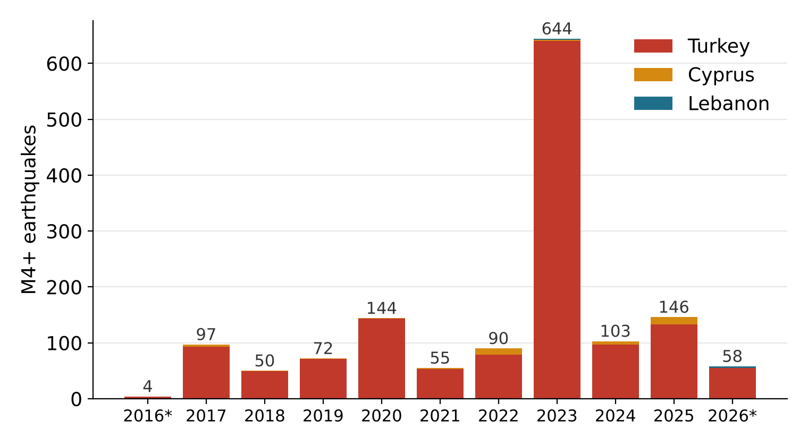
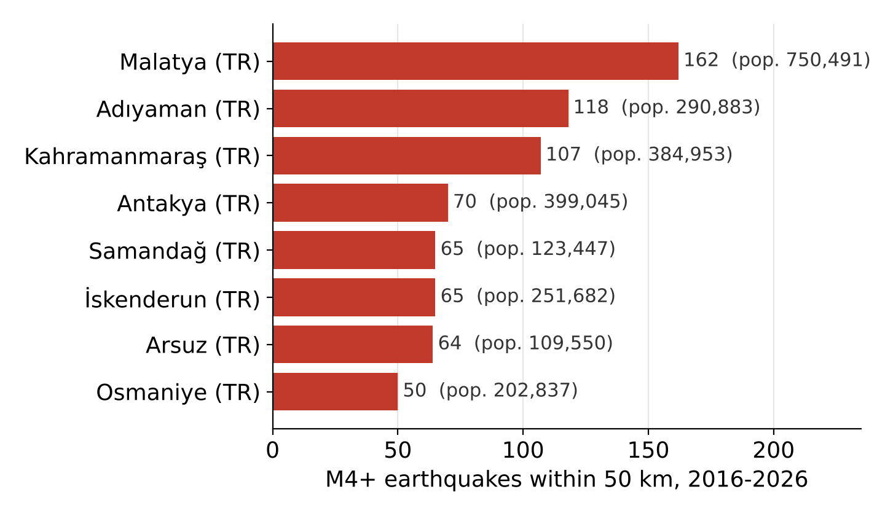

SeismicWatch
M4+ earthquakes around Lebanon, Turkey and Cyprus:
how often, where, and which towns are closest
Tala Mezher (202200920) · Sireen Hammoud (202206566)
DSC 620 Data Engineering · Dr. Ahmad Audi · LAU, Fall 2026
github.com/talamezher/seismicwatch
The questionand who it is for
How often do earthquakes of magnitude 4 or more occur around
Lebanon, Turkey and Cyprus, where, and which populated places are closest to them?
Ten years: 14 Nov 2016 to 14 Nov 2026. The pipeline keeps running after that.
Users
- civil-protection and municipal planners: which towns are hit most often
- insurers: exposure by area
- journalists and residents: a checked number, not a headline
They need
- counts per country and per year
- a map
- a ranking of towns within 25 or 50 km
Three sources, three types
| Source | Type | This run | Updates | Terms |
|---|
| USGS earthquake catalogue | API, GeoJSON, paged | 2,753 events · 11 pages | minutes; revised later | public domain |
| GeoNames LB, TR, CY, cities1000 | files, zipped TSV, UTF-8 | 306,958 lines · 16 MB | daily | CC BY 4.0 |
| Wikipedia List of earthquakes in Turkey | web page, HTML tables | 3 tables · 100 rows | irregular | CC BY-SA 4.0, robots.txt allows |
USGS gives
when, where, how strong, how deep, and every revision
GeoNames gives
every town and village, with coordinates and population, so we can measure distance
Wikipedia gives
which earthquakes were deadly: our check that the big ones are all there
Architectureraw, staging, warehouse, dashboard · one command: python run_pipeline.py

Extractioncode-driven, polite, and safe to re-run
- One polite client: User-Agent with contact, 60 s timeout, 1 s between requests
- 429 / 5xx: retry with backoff; other 4xx: our bug, never retried
- Raw first: every answer saved untouched + manifest (URL, time, records, SHA-256)
- USGS full: year windows,
/count then limit/offset, checkpoint
- GeoNames: If-Modified-Since · Wikipedia: robots.txt first
Incremental: watermark + 1-day overlap
usgs incremental: 5 event(s) updated after 2026-11-23T20:58:08
(watermark 2026-11-24T20:58:08 minus 1 day overlap)
ROWS raw USGS records 2,758 -> older versions 5
-> quarantined 1 -> loaded 2,752
- revised events replace their row, never appended
- watermark saved only after a successful load
- asks M≥3.5, to see events revised below 4.0
Profiling first, then one staging table per source
USGS
- all reviewed, 3 magnitude types
- 68% of depths = 10 km default
- 298 place texts lost letters at the source: "Marmara Ere?lisi"
GeoNames
- population 0 = unknown (76% of places)
- dem -9999 = no data
- 2,995 towns in two files
- PPLX = city districts: would count people twice
Wikipedia
- "7.8 Mw", "6.6–6.9", footnotes
- "50,783" deaths as text
- 16 rows without a full date
Every staging table: 1 rename · 2 cast · 3 standardize ·
4 placeholders → missing · 5 newest version / duplicates · 6 flag invalid rows (never delete)
A problem we found: one earthquake, two idsand how we solved it
| us70009ad8 | us70009adb |
|---|
| time | 0.1 s apart |
| epicentre | 1.3 km apart |
| place | 98 km S of Néa Anatolí, Greece |
| magnitude | 4.6 | 4.5 |
| significance | 326 | 312 |
Key unique, no error, yet the same earthquake is counted twice:
two keys, one real thing.
Our fix: test Q7 (quarantine)
- two ids within 2 s and 5 km = the same earthquake
- keep the one with more information (higher significance)
- the other goes to
quarantine: "probable duplicate of us70009ad8"
- thresholds tight on purpose: the next pair is 13.7 s apart, M4.3 and M4.7, two real shocks
- a unit test and the CI sample keep the real pair
Joins and business rulesevery join: left join, validate=, row count before and after
| Join | In | Out |
|---|
| earthquake → nearest town | 2,752 | 2,752 |
| earthquake → Wikipedia list | 2,752 | 2,752 |
| earthquake × towns within 50 km → town | 151,611 | 151,611 |
- BR-1 country = country of the nearest town, if ≤ 100 km
- BR-2 bands 4.0–4.9, 5.0–5.9, 6.0+
- BR-3 exposure = towns and people within 25 / 50 km
- BR-4 on Wikipedia: ±1 day, ±0.3 magnitude
- BR-5 depth class · BR-6 study period
- the run date is passed in: no rule reads the clock
All 16 Wikipedia earthquakes of the period matched. The ±1 day mattered: Bodrum,
21 July 2017 local time, is 20 July 22:31 UTC.
27 data tests on every run
stop 12 tests
load nothing
- ≥ 1,000 earthquakes; no more than 1% fewer than last time
- unique, not-null keys
- row accounting
- relationships R1–R7 inside the load transaction
quarantine 9 tests
set aside, with the reason
- ranges, accepted values, period
- Q7 duplicate ids: 1 row
- K1 unreadable magnitude: 6 rows
warn 6 tests
load, log it
- W5 default depths: 68%
- W6 lost characters: 298
- W3 at sea: 127 (4.6%)
2,758 raw records = 5 older versions + 1 quarantined + 2,752 loaded
Star schemagrain: one row per earthquake (USGS event id)

fact_earthquake: 2,752 rowsfact_place_exposure: one row per earthquake and town within 50 km, 151,611 rows; kept apart to avoid the duplicate trap- dimensions: date, place, country, magnitude band
dim_event_version: type 2, every USGS revision (valid_from, valid_to, is_current)- SQLite, one transaction, upsert on natural keys
Live demonstration
$ python run_pipeline.py # incremental run: extract, stage, test, load, log
$ python scripts/run_report.py # run_log, test results, quarantine, joins
$ python scripts/check_rerun.py # rebuild twice: same fingerprints
$ python dashboard/app.py # http://127.0.0.1:8050
Watch for
the watermark and overlap, the join counts, the test results, the row accounting
Then
the quarantine table: why each row was set aside
Backup
if the network fails: --skip-extract rebuilds from the raw layer
The answer: how often14 Nov 2016 to 14 Nov 2026, M4+, country by BR-1
1,417Turkey · 120 M5+ · 13 M6+
41Cyprus · strongest M6.6, off Paphos, 2022
5Lebanon · all below M4.5
640Turkey in 2023 alone (Kahramanmaraş)

The answer: where, and which towns

- two belts: the East Anatolian Fault (Hatay to Malatya) and the Aegean coast
- towns of 10,000+: Çelikhan 185, Yeşilyurt 173, Göksun 171
- cities of 100,000+: Malatya 162, Adıyaman 118, Kahramanmaraş 107
- 1,427 of 1,463 earthquakes had a town within 50 km; 262 had a million people within 50 km
- Cyprus: Paphos 26 · Lebanon: no town above 3
The dashboard3 charts and 2 tables · callbacks: filters → summary; filters + clicked town → map and events

Running it every day
- One command, a log file per run, a
run_log row per run
- Re-run proof: 4 runs, same fingerprint
b152f50bb04c8535
- Scheduling: GitHub Actions, every day 03:17 UTC, data kept in the Actions cache
- CI: 36 pytest tests + an end-to-end run on 202 real earthquakes, twice, on every push
- History (bonus): type 2 versions of each event
| Table | Rows | Run 1 = Run 2 |
|---|
| fact_earthquake | 2,752 | e9feadb4… |
| fact_place_exposure | 151,611 | cd0e966e… |
| dim_place | 14,922 | 2a609c89… |
| dim_event_version | 2,752 | be217860… |
| dim_date | 3,663 | 130d646b… |
Limitations and next steps
- Nearest town ≠ who felt it: BR-1 gives the 2020 Samos M7.0 (117 deaths in Izmir) to Greece
- Aftershocks counted one by one: decluster before comparing years
- 76% of places have no population: a population grid (WorldPop, GHSL) would be fairer
- Mixed magnitude types, default depths: add a national catalogue (AFAD, CNRS Lebanon)
- Wikipedia covers Turkey only · the Actions cache expires after 7 idle days
Thank you
Questions?
github.com/talamezher/seismicwatch
Data: USGS (public domain) · GeoNames (CC BY 4.0) · Wikipedia (CC BY-SA 4.0)